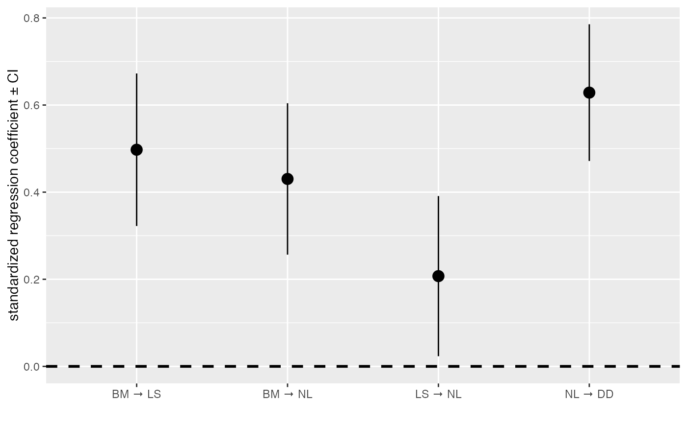

Perform model averaging on a list of DAGs.
A list of fitted_DAG objects containing
coefficients and standard errors, usually obtained by using est_DAG()
on several DAGs.
A vector of associated model weights.
Either "full" or "conditional". The methods
differ in how they deal with averaging a path coefficient where the path is
absent in some of the models. The full method sets the coefficient (and the
variance) for the missing paths to zero, meaning paths that are missing in
some models will shrink towards zero. The conditional method only averages
over models where the path appears, making it more sensitive to small
effects. Following von Hardenberg & Gonzalez-Voyer 2013, conditional
averaging is set as the default. Also see MuMIn::model.avg().
Additional arguments passed to MuMIn::par.avg().
For details on the error calculations, see MuMIn::par.avg().
An object of class fitted_DAG, including standard errors and
confidence intervals.
# Normally, I would advocate the use of the phylo_path and average
# functions, but this code shows how to average any set of models. Note
# that not many checks are implemented, so you may want to be careful and
# make sure the DAGs make sense and contain the same variables!
candidates <- define_model_set(
A = NL ~ BM,
B = NL ~ LS,
.common = c(LS ~ BM, DD ~ NL)
)
fit_cand <- lapply(candidates, est_DAG, rhino, rhino_tree,
model = 'lambda', method = 'logistic_MPLE')
ave_cand <- average_DAGs(fit_cand)
coef_plot(ave_cand)
